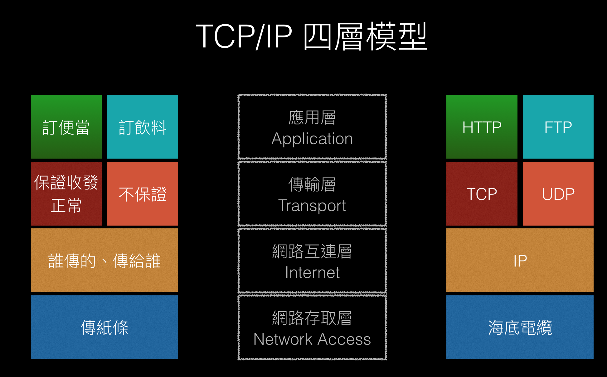

好故事值得一看再看。
簡述
TCP/IP 四層模型是從「OSI 七層模型」延伸出來的一個模型，簡單來說就是把七層精簡成四層，會比較沒那麼複雜。
然後這篇筆記想記下的事情是：
- 知道 HTTP 是什麼？
- 知道什麼是 TCP / IP 四層？四層是包含哪些？
- 知道每個服務可以遵守不同的協議？
- 知道 TCP / UDP 的差異？
- 知道什麼是 port？
- 知道網路分層的概念？
看圖複習

應用層
簡單來說就是：用傳紙條來做什麼？
可以有很多不同的應用，例如「訂便當」、「借籃球」、「NBA 即時戰況」等等，如果對應到網路的世界就是「HTTP」、「FTP」、「SMTP」等等。
備註：服務跟協議可能蠻常搞混的，簡單來說你可以想成「訂便當服務」採用的是「訂便當協議」；「HTTP 服務」採用的是「HTTP 協議」；「FTP 服務」採用的是「FTP 協議」。每個服務都會有採用一個對應的協議來決定雙方之間的溝通方式。
這些服務可能都匯集在同一台主機上，而為了讓每個服務各司其職，會用「port」來代表每個服務的端口（連接埠），你想要用哪個服務，就輸入對應的端口號碼，常見的 port 為：
- HTTP 80（預設）
- HTTPS 445
- FTP 21
例如我想用 google 主機上的 HTTP 服務，我可以在網址輸入：
1 | 172.217.160.110:80 |
不過因為預設就是採用 80 這個 port，所以其實就算不輸入也沒關係。
另外，因為不同服務採取的協議不同，所以內容格式也會不同，例如訂便當的格式比較複雜，但借籃球的格式就很簡單。
訂便當（HTTP）的格式是：
- 標準化內容格式
- 把內容分成 header 跟 body
- 用狀態碼標準化結果（回應）
- 用動詞標準化動作（請求）
在訂便當的例子裡是：
1 | POST |
對應到網路的話會是：
1 | POST |
傳輸層
簡單來說就是：用什麼方式傳遞資料？
最常見的兩個協議：
- TCP 保證雙方都能接收跟傳遞到訊息（因為有三次握手）
- UDP 不保證訊息能接收，但速度比較快
「訂便當」這個應用建立在《紙條保證傳得到通訊協定》（或者說是 TCP）之上，目的是讓訂便當的同學確定自己的訊息能被接收到。但是像「NBA 即時戰況」就沒有必要建立在《紙條保證傳得到通訊協定》上，因為重視的是即時性，如果每一次都要經過三次確認的話會很麻煩。
網路互連層
簡單來說就是：用什麼方式表示寄件人與收件人？
也就是我們常聽到的「IP（Internet Protocol）」。但要注意 「IP」跟「IP 地址」兩個是不一樣的意思，前者指的是協議本身，後者指的是這個協議下規範的一個東西（也就是地址）。所以我們口語常說的「IP」，正確來說應該是「IP 協議下規範的那個 IP 地址」。
跟 IP 相關的協議有：
- IPv6
- IPv4
IPv6 的 IP 地址：2001:b011:c005:5d0a:453:4df:cccb:e8df
IPv4 的 IP 地址：192.168.1.104
主要就是版本的差異，前者新後者舊，然後 IPv4 最大的問題就是能儲存的數字比較短，所以會碰到 IP 不夠大家用的問題，所以才有了 IPv6 來解決這個問題。
網路存取層
簡單來說就是：實際上要怎麼做到傳紙條這件事？
以實際上來說：
- 海底電纜
- 路由
其實就是實際物理上的東西，要傳送紙條一定得透過「同學」或是「郵差」來做到傳紙條這件事。對應到網路也一樣，要傳送資訊一定得透過「海底電纜」或是「路由」來做到傳遞訊號跟資料這件事。畢竟不可能會有用念力把東西從 A 傳到 B 這種不科學的事情發生。
分層的概念
最後只是想提醒一下，之所以會用「層」來解釋這些東西，是因為每一層之間都有相對應的關係。例如說「訂便當」這個服務是基於《紙條保證傳得到通訊協定》跟《你是誰/要傳給誰協定》之上。
所以要做溝通這件事，一定會經過：應用層 => 傳輸層 => 網路互連層 = >網路存取層 這幾個不同的層，不可能會有少掉哪一層的情況。
但同時也要知道，每一層之間其實可以採取不同的協議，像是「訂便當」採取《紙條保證傳得到通訊協定》這個協議來作為傳輸方式，但「NBA 即時戰況」就不採取。其實就看你的需求是什麼，並沒有哪個服務一定要用哪一個協議才是最正確的。你甚至可以自己創造一個新的協議。